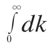
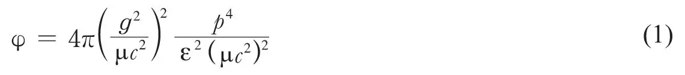
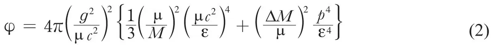
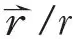
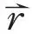
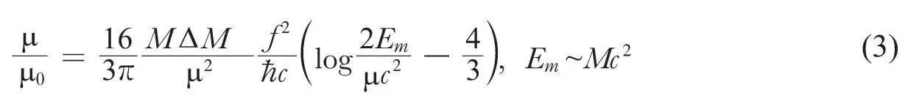

英文
英文海特勒
编者按
瓦尔特·海因里希·海特勒是一位德国科学家，他于20世纪30年代移居英国。名为介子的物质粒子实际上并没有观察到，它们的存在只是推测；其作用被认为是核物质的粒子（比如中子和质子）之间作用力的媒介。这篇专业性很强的短文指出核内粒子的其他一些性质，如磁矩，也能被视为核力的介质，我们可以通过它们的功能函数计算得到它们的值。 英文
现有形式的介子理论呈现若干困难，这是与电荷守恒和自旋引入介子与核粒子之间相互作用的特殊方式相联系的。例如，质子和中子的反常磁矩表达式[1]作为

是发散的。我们发现介子被核散射的截面比实验允许值大很多，而且其随着能量的增加而迅速增加。这种现象与宇宙线介子具有高穿透本领是相矛盾的。根据现有的理论，能量为ε（动量为p/c）的纵向介子（静止质量为μ）的散射截面为[2]
通过将介子与光量子类比，我们可以预计散射截面的量级为(g2/Mc2)2，其中M为质子的质量，并且当能量ε>μc2时不再增加。由威尔逊[3]的实验表明，即使在能量低至几倍μc2（108电子伏）时散射截面的量级比表达式（1）的值小，而且其值不随能量的增加而增加。 英文
从对表达式（1）的计算我们可以看出，前面所述的两种困难都源于电荷守恒禁止了一些跃迁这个事实，而如果介子是中性粒子这些跃迁就会发生[2]。例如，一个中性介子可以被一个质子发射和吸收。而一个正介子只能被一个质子发射却不能被其吸收。如果我们允许一个正介子也可以被一个质子吸收且一个负介子可以被一个质子发射等等，或者换句话讲，如果带有–e和+2e电荷的“质子态”存在[4]，那么将得出数量级正确的散射截面。但是这些粒子的引入会遇到下面的困难。首先，具有这些性质的粒子并没有被观测到，而如果它们在重核中出现时它们是不太可能不被观测到的。其次，如果一个质子也能够发射一个负介子，那么负介子会对异号质子的反常磁矩有一定的贡献，并且其他所有的量都是相同的话，这些贡献与来自正介子的贡献有相同的值，因此，根本就不会存在反常磁矩。 英文
如果假定这些新粒子的静止质量远远大于质子的质量，比如说为电子质量的25~50倍（见下文），我们就能够克服这些困难。那么，这些粒子将会极其不稳定，并且在重核结构中不会起任何作用。用ΔM表示新粒子与质子之间的质量差，当能量满足ε < Mc2时，假定ΔM≪ μ，纵向介子的散射截面可以表示为：

然而当能量满足ε>μc2时，这个表达式的值不会随能量增加。如果p趋近于μc2，表达式（2）比表达式（1）小(ΔM/μ)2倍。一个趋于1/5的ΔM/μ值，足以使表达式（2）与实验要求相吻合。如果能量ε大于Mc2，φ可能会因为质子的相对论特征而减小。 英文
对于自旋问题必须采取相似的分析思路。自旋同样会对高散射截面（对于横向介子）有贡献。如果我们同样引入“较高自旋态”，比如，具有自旋s为3/2的重粒子，就可以避开这个问题。在介子场的影响下，自旋s为1/2的正常质子态跃迁到较高能态，可以以非常简单的方式包含于理论中。在现有的理论中，介子场φ与核粒子之间与自旋相关的相互作用为f/λ（σ与φ做旋度计算），其中σ为自旋矩阵，且仅当Δs = 0时才有矩阵元。必须对σ矩阵进行扩展，这样才能够包含Δs = 1的跃迁。如果我们用偶极矩

矩阵来替代σ，那么就可以满足上面的要求。对于Δs = 0的跃迁，的矩阵元和σ的相同。假若这些得以实现，在替代σ后，横向介子的散射截面仍然很小，同表达式（2）中的散射截面具有一样的数量级。的物理意义为质子的内禀磁偶极矩，这是介子理论的显著特点（当然，
并不是质子的空间位置）。 英文
作为新的假定所得到的进一步的结果是，反常磁矩仅仅是对数上的发散。从现阶段的介子理论看来，这种发散几乎可以不被当作一个很严重的困难。到目前为止，质子的相对论效应都被忽略了，如果对此进行适当的考虑的话，目前存在的对数发散也会消失。作为上述形式的介子理论有效性的上限，我们采用了质子的静止能量。因此质子的反常磁矩表示为（以核子的磁矩μ0为单位）：

当ΔM/μ趋于1/5时这是正确的数量级，而1/5正是上面所假定的值。 英文
（胡雪兰 翻译；张焕乔 审稿）